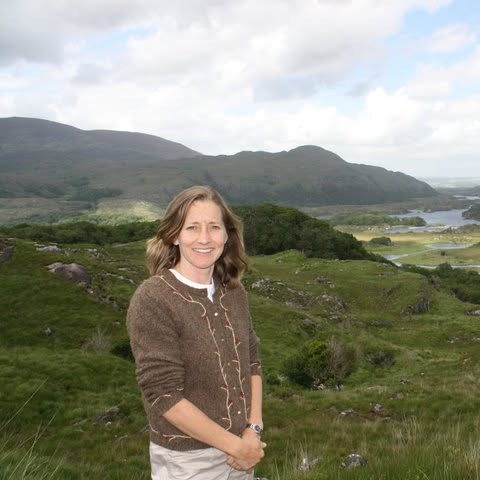

Thistle Dew Green is a proud member of the ASCFG (American Specialty Cut Flower Growers). We are dedicated not only to growing the finest specialty cut flowers, but to preserving the natural world as we do it. Sustainable practices and love for the land guide everything we grow.
Our membership in the ASCFG connects us to a national community of growers who share a commitment to quality, sustainability, and the art of specialty flower farming.

Karen Haddad founded Thistle Dew Green, an organic flower farm based in Colorado Springs, Colorado, out of a lifelong passion for flowers and the natural world. What started as a personal love for growing blooms has blossomed into a mission to share that joy with the entire community — through weddings, proms, special events, and everyday bouquets, all provided with heart.
Karen believes flowers have the power to bring happiness and beauty to any moment in life. Her commitment to organic growing practices ensures that every flower is as good for the earth as it is beautiful.
Thistle Dew Green is a passion project. Karen's goal is simple: spread the joy that flowers have always given her to the rest of the world.